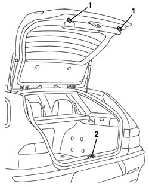
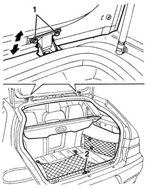
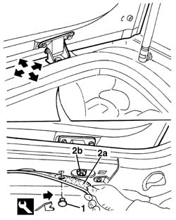

7015A14 tailgate - adjust centring and profile - includes hinge and compartment seal adaptation
- Path
- Procedures > 70 FITTINGS > 7015 TAILGATE/ > 7015A tailgate assembly > 7015A14 tailgate - adjust centring and profile - includes hinge and compartment seal adaptation
- Kind
- repair procedure (removal / refitting; the operation number is the code)
- Applies to
- all engines; all production periods
- Interactive page
- https://sloeber94.github.io/elrnDB-a156/en/#/3238706
Applies to: all engines; all production periods; only with equipment: Station Wagon
Open the tailgate.
1. Check that the buffers are working properly.
2. If necessary, adjust the position of the striker. 7015B18 tailgate lock striker - r+r .

Applies to: all engines; all production periods; only with equipment: Station Wagon
If the adjustments described above are insufficient, adjust the tailgate hinge position as described below.
1. Loosen hinge bolts and adjust the tail-gate position.
Tighten the bolts.
2. If necessary, adjust the position of the striker. 7015B18 tailgate lock striker - r+r .

Applies to: all engines; all production periods; only with equipment: Station Wagon
If the adjustments described above are insufficient, adjust the tailgate hinge position as described below.
7040H12 Roof panel REAR TRIM - R.R.
1. Working on both sides of the car, undo the retaining studs using the special tool.
 | Name | Country |
|---|---|---|
1 | Scraper blade | 1.823.015.000 |
2. Slightly lower the ceiling trim (2a) and undo the hinge retaining nuts (2b). Then adjust the tail-gate position.
Tighten the bolts.

Applies to: all engines; all production periods; only with equipment: Station Wagon
Test the tail-gate works properly and is correctly aligned.
Apply more sealant between the bodyshell and hinges.
Fit the ceiling trim and do up the retaining studs.